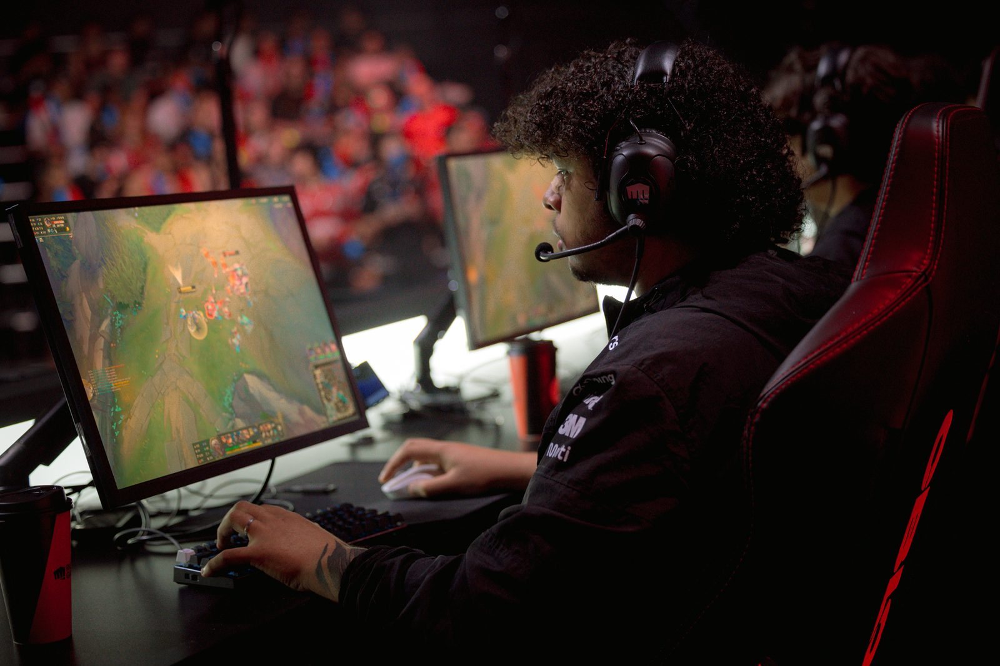

O confronto, realizado na fase eliminatória da competição, marcou o avanço da Matilha para a próxima rodada dos playoffs, onde enfrentará a equipe da LOUD em uma série melhor de cinco (bo5).
Desempenho no Rift
A RED Canids mostrou um desempenho sólido desde o início da série, impondo seu ritmo de jogo em ambos os mapas. Na primeira partida, o time conseguiu um controle consistente dos objetivos e conquistou vantagem nas lutas em equipe, fechando o jogo com vantagem clara em abates e ouro.
Já no jogo 2, a equipe repetiu o domínio, aproveitando escolhas de campeões que encaixaram bem na composição e pressionaram a FURIA em momentos decisivos, garantindo a vitória por 23–12 no placar de eliminações, segundo estatísticas de matchup.
O resultado consolidou a RED Canids como uma das forças competitivas mais equilibradas da chave superior dos playoffs, com controle claro do ritmo de jogo e execução coordenada de estratégia — fatores que continuam sustentando sua trajetória no torneio.

Próxima etapa e contexto geral
Com a vitória, a RED Canids avançou para a Rodada 4 dos playoffs, onde enfrentará a forte equipe da LOUD em uma série bo5 que promete ser um dos confrontos mais aguardados da fase final, já que ambas as equipes vêm de performances consistentes no torneio.
No mesmo dia, outras séries decisivas agitaram os playoffs, como a vitória da LOUD sobre a LOS, também por 2–1, o que contribuiu para o redesenho da chave superior e a expectativa por confrontos ainda mais disputados nas fases seguintes.